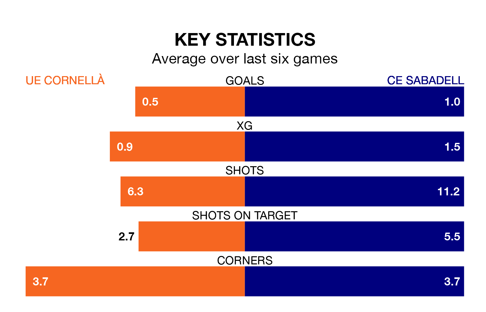

Struggling CE Sabadell face UE Cornellà away at Campo Nuevo Municipal de Cornella on Sunday looking to build on a win in their last league outing.
After securing all three points with a 3-1 victory over SD Tarazona on January 4, CE Sabadell sit 19th in Primera Division RFEF Group 1.
They travel to play an UE Cornellà side 14th in the standings, who lost in their last match, 3-0 against Gimnàstic de Tarragona, on January 3.
UE Cornellà are in bad form in Primera Division RFEF Group 1, with one win and a draw from their last six games.
With two wins and a draw over that period, CE Sabadell's form is better – they have taken seven points from 18, compared to the hosts' four.
With 18 goals in 18 games so far this season, UE Cornellà are scoring at below the league average rate with 1.0 goals per game. And they are conceding at an average rate, letting in 20 goals at a rate of 1.1 per game.
The away side, meanwhile, are average scorers, with 1.1 goals per game. They have conceded 1.8 goals per game.
In the last five years, UE Cornellà and CE Sabadell have played each other on six occasions. UE Cornellà won two of them, CE Sabadell three, and they drew once.
On average, UE Cornellà scored 0.8 goals and CE Sabadell 0.8 in those matches.
Their last meeting was on May 20, when UE Cornellà won 1-0 at home.
Updated: 11:31, 09/01/24